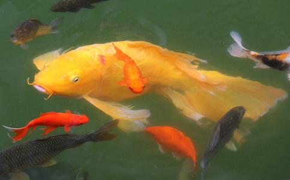

本周一,我晚上做一个梦,梦境清晰.梦里是我去购买鱼,可是没有鱼,只有鱼子,我不停的买鱼子,越买越多,怎么也买不完.后来我拿着一大袋和一小袋的鱼子去
梦醒后故事才刚刚开始,我的梦有三种,一种是杂念产生的,也就是日有所思,夜有所梦;还有一种是
下午我才反映过来,去附近的市场看看有没有鱼子卖,去之前,我想到我经常告诉别人放生鱼子要在河滩,一层草一层小沙的放在水浅处,现在想想真是罪过,那样放固然是好,可以谁能那么细心去放呢.多半是一听要如此,还不如不放.就如同一些人也不反对放生,只是以老
其实我最近看了一个故事,改变了看法,江慎修
在宋徽宗宣和年间,有个很有钱的商人,名字叫杨序。在二十八岁的时候,梦见一位神人告诉他说:“你再过十天,就要死了。但是你能够救活一万条生命,可以免死。”杨序说:“在这短短的十天内,要救活一万生命,恐不容易做满这数。”神人说:“
这类古代的故事我是非常相信的,因为现在我的身边也不断的出现这类故事,并不是什么太希奇的事情.至于放鱼子的要求,一层沙一层鱼子一层草,似乎是现代人为追求完美而立,并不见善书说和佛经记载.而我在看这个人的故事,是来自,里面我重点注意了,这个人是买鱼子"放入江中",则活到97岁.他是直接放入江中.也就是说可以放到江中.我曾经买了两大箱子鱼子全部直接倒进珠江,后来看到人家说鱼子要如何如何放才好,我退缩了,很久没有放过鱼子,后来还告诉别人也要这么放,无疑是因为自己劝善没有智慧,断了鱼子的生路.
我们这个市场仅仅有一个,一般没有鱼子卖. 我去后反复寻找,只在一个老太太那里发现了鱼子,而且还不少,有10斤左右,很大一堆,11元一斤,我全部买下. 买的时候我问还有没有,老太太说:"有."听到她说有,我大喜,因为我准备了600多元钱来买鱼子的,才买到100元,我怎么能甘心.于是我问:"还有多少?"老太太说:"如果你要,我再给你杀一些."我一看,下面的池子里有大批鲤鱼,全部是大肚子的.我问:"这些鲤鱼都是有子的?"老太太说:"个个都有,如果要,我就再杀."我一看,前面已经杀了五六条,摆放在地上,罪过.我说:"你的鲤鱼多少钱一斤,老太太说:"五元五."我说我都买了.
全部买下后一称是108斤,我打车去珠江边放生.有一些是超级大鲤鱼,个肥肚大.大家要记得,同时放鱼和鱼子的时候,要分开一段距离,分开100米到200米才好,怕鱼会吃了鱼子.
放生鱼子后我心情好极了,这样的放生数量之庞大真是前所未见,即使放生5000斤泥鳅那次,也未必有这次数量多(泥鳅超小的300只一斤,大的30只一斤),真是给人带来无穷的
我回来以后想,要是能天天如此放鱼子和大鲤鱼就爽了,最好坚持到永远,可是一天要600多,有没有那么多钱呢,后来想想还是骂自己一句"业障鬼",放生是佛菩萨出钱的难道忘记了,只要坚持,就一定有源源不断的钱来到让我能够一直放下去.
这个故事基本结束了,不过还有一点尾声,过后我还去过两次,都是仅仅有一两块鱼子,也没有什么大鲤鱼了,只是那天有,我问他们卖鱼的人,都回答暂时不多,有观赏鱼,放生也很吉利.问我要不要.我不要,今天再去,还是两条鱼子,我买下来,又买了几条鲤鱼和泥鳅放了.那天是托梦无疑了,因为我喜欢写修行心得,所以给我托梦也是给大家托梦,让大家注意家乡有没有鱼子可放.不过北方冰天雪地了,当然说的是南方同修要注意鲤鱼的产卵季节到了,多放些鱼子.
我也曾经把一些鱼子放到河边很多草覆盖的水域,也曾经丢在河水里.都是可以的.佛经说:鱼子修多罗,菩萨初发心,三事因中多.意思是鱼子数量很庞大,但是真正活的很少,你放的时候是活的,你就得当时的功德,以后死了,那是后面的缘.菩萨初发心也是一样,发大心的多,坚持下来到成佛的少,所以贵在坚持.阿弥陀佛
<附录:放生鱼子的方法>佛说鱼子不经盐渍过,经过三年,还可以再活命。施愚山先生说:「鱼已经死了,将鱼子轻轻的拿出,勿损坏,勿著盐,分摊在稻草把的上面,等他水迹少微干一些,浅浅的埋藏在水边的沙泥下,以免别的鱼来吞吃,自然都可以活命了,但是埋藏的地方,切不可离水的。倘若在冬冷春寒的时间,用干燥的泥块捣成粉,将鱼子拌裹了、晒暖了,好好收藏起来,积到阴历四月十五以后,撤放在河滩的水草中间,没有不都活的。其余月份,随时可以放的,也更便当了。这个方法可以用,也可以将鱼子直接扔进江中.
12月23日补充:
最近每隔两天就去放生一次鲤鱼和鱼子,因为鲤鱼又给我老婆连续托梦两次,想想也未必是鲤鱼托梦,可能是佛菩萨的提示.因为我最爱放鲤鱼,并且又有这么多鱼子,佛菩萨不忍心看到鱼子全部被吃.我每次去都有人要买鱼子,我都是全包了,
每次放生我都会告诉一个买鱼的市民不要杀生,不要买活的,会短命多病,每次一个.我甚至会说:"我爷爷就是这么死的,其实我爷爷确实是因为打猎,后来得了中风死的."这样说了,有一次一个女人买乌龟,我过去告诉她千万别杀乌龟,其他的动物也别杀,因为杀生会短命多病,我爷爷就是杀生得脑血栓死了,这个女人听我说后,就表示再不买了,
最近放这个就把钱差不多放没了,这两天想再去放一次.我自己看鱼子,发现实在是太小了,一克里面大概就有10万条命,那一公斤是一亿条命了,我最近放了40公斤,难道有40亿条命被我救了?昨天我拉了一个饭店老板去放鱼子,她出390,我出480,放了160斤大鲤鱼,10斤鱼子.放后很舒适充实.
光目答言:我母所习,唯好食啖鱼鳖之属。所食鱼鳖,多食其子,或炒或煮,恣情食啖,计其命数,千万复倍。尊者慈愍,如何哀救?———《
我们放鲤鱼鱼子近百斤,计其命数,则是亿万复倍呀!!我最近半个月的变化比较明显,气色非常好,心中常常生智慧,心态平和,佛号也常常提的起.说明这段时间放的数量超过我6年总的放生数量,福分积累确实快.放生的同时要重视放生大肚皮母鱼和鱼子呀!
放生的发心很简单,就是有生命要被杀掉,将被杀的生命会很
我很赞同王里师兄的观点.放生的功德要回向
至于放鱼子的问题,一些善书是赞成的,所以我还要坚持。